文 / 愛麗絲編
文章轉載自 / UnBetwixt 惟物之間
『 時間本身並不存在，看似線性的呈現，其實是我們表達事物的綜合體。』
– 伊曼努爾·康德。德國哲學家
採訪的當日，是濕冷的陰雨天，但藝術家洪郁雯 Julia Hung 笑容可掬地迎接讓人精神為之一振，她領著我進入展場，開始她這次在台北的展覽導覽『 Will Looped 似識而非 』。一踏入展間，彷彿進入一個奇幻生物環繞的陸上海洋世界。用銅線一條一條的纏繞交織成彷彿具有生命力的絢麗作品。Will Looped 似識而非 』。一踏入展間，彷彿進入一個奇幻生物環繞的陸上海洋世界。用銅線一條一條的纏繞交織成彷彿具有生命力的絢麗作品。
她說她在創作初期，面臨著 Covid – 19 疫情帶來的變異以及無常，重新探索藝術和生命的本質以及自身及社會的關聯。透過創作藝術作品，當成一種自我對話，嘗試以另一種角度尋找內心的平衡。經由實驗不同媒材的可能性之後，反思藝術的原創性，進而重新探索『自由意志』這個議題。我特別欣賞她在作品上的配色，輕快活潑的配色，漸層的很令人舒服、愉悅。特別是靈感取自於生物ＤＮＡ和海洋生物，衝撞誕生的形體彷彿是種全新生物。再揉和她在留法期間的哲學思想衝撞，讓每一幅作品都讓觀眾直得細細駐足停留反思。
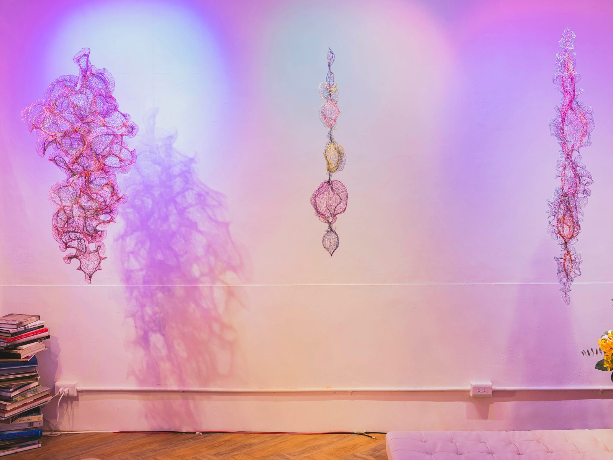
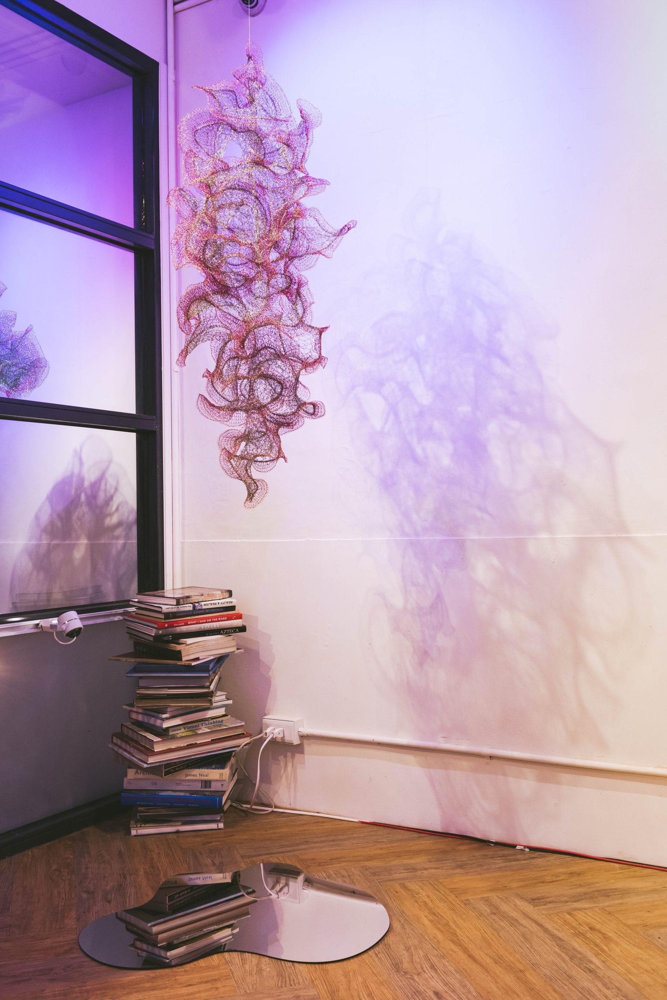
『我很喜歡海，水對我來說就像是種人生導師，隨時提醒著我和環境多元共融的生長，就像水可以在不同的容器中被盛裝著一樣隨遇而安。』– 郁雯說，慧頡的眼神透露出一抹自在。生命源自於水，繁衍於海洋，演化於時間。如同海洋生物般的雕塑作品懸掛在空中讓觀眾就像是魚一般自在悠遊在海洋世界中。流線型的線條不斷提醒著『思維意識生生不息的流動著』，讓好奇心帶領著你我探索未知。Julia 以彩漆銅線編織出有機形體，呈現出如同海洋生物般璀璨奇幻的裝置雕塑。
銅線，就像是時間，每一刻消逝後即成為歷史。這些時間的痕跡用銅線呈現重複纏繞成半透明的網狀雕塑，模糊立體維度空間中點、線、面、體的規則。更挑戰傳統線性時間的概念以及『自由意志』的關係。
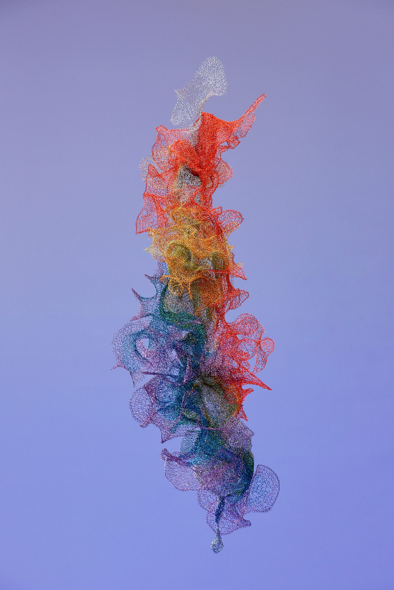
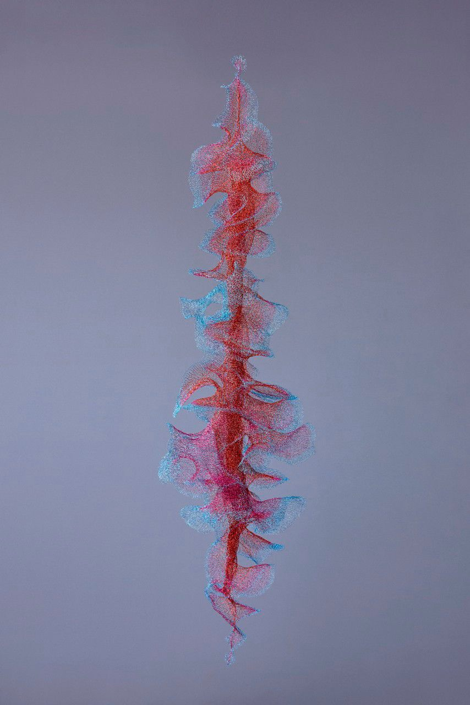
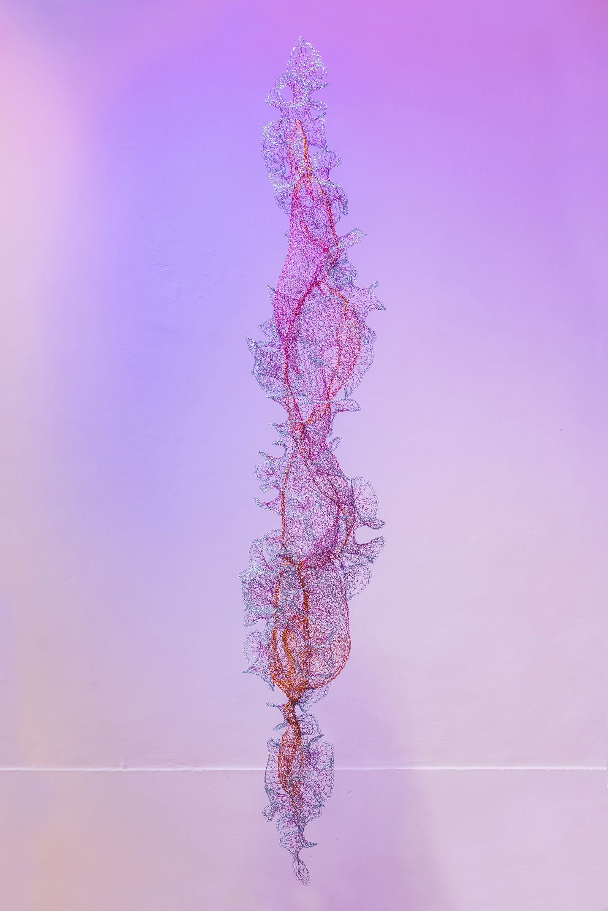
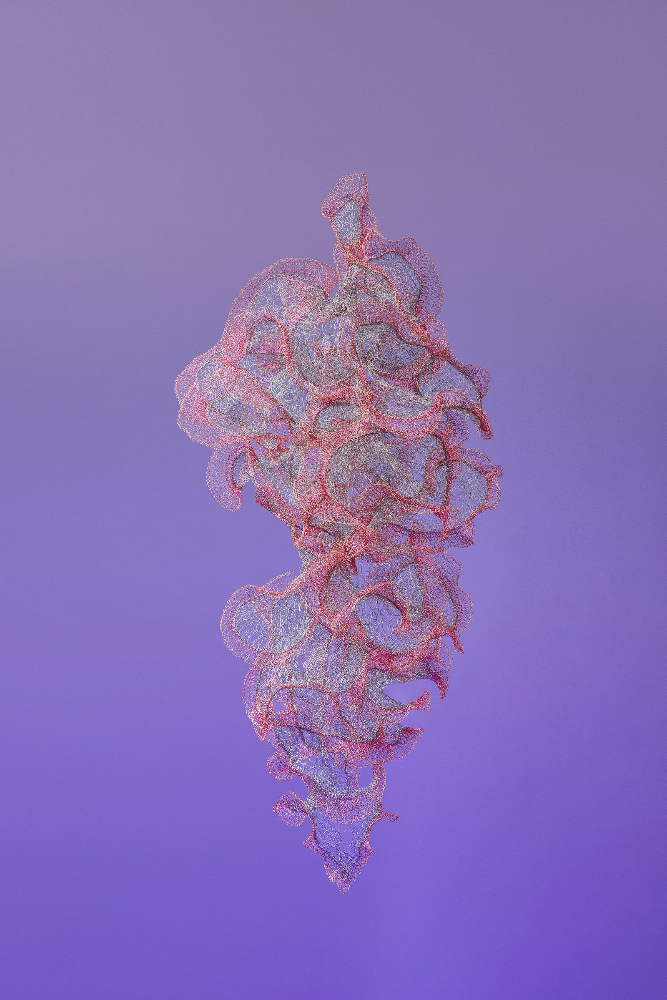
此外，雕塑也一體兩面的具體化呈現了自由和限制。看似極端的兩者，打破時間空間的界線，同時呈現在作品上。銅線在空中無拘無束的穿梭，透過編織相互牽絆而構成形狀，再交疊纏繞成立體，就像是生命一切源自於單細胞生物，再逐漸構成基因演化為生物。演化過程環境以及其他因素，限制我們的同時也塑造著我們。而當在『束縛與自由』之間遊走時，人類所認定的『自由意志』，這樣的意識形態究竟是真實的存在？還是如夢境似的虛幻夢境？如同基因程式編碼中在生命演化過程中不斷循環構成反思。
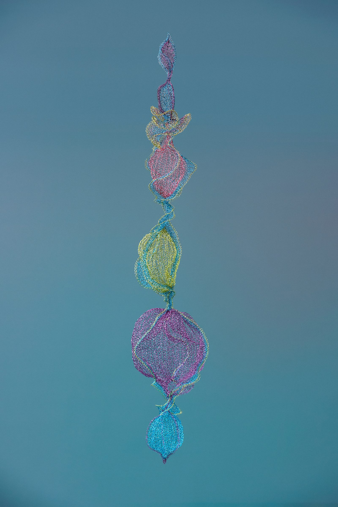
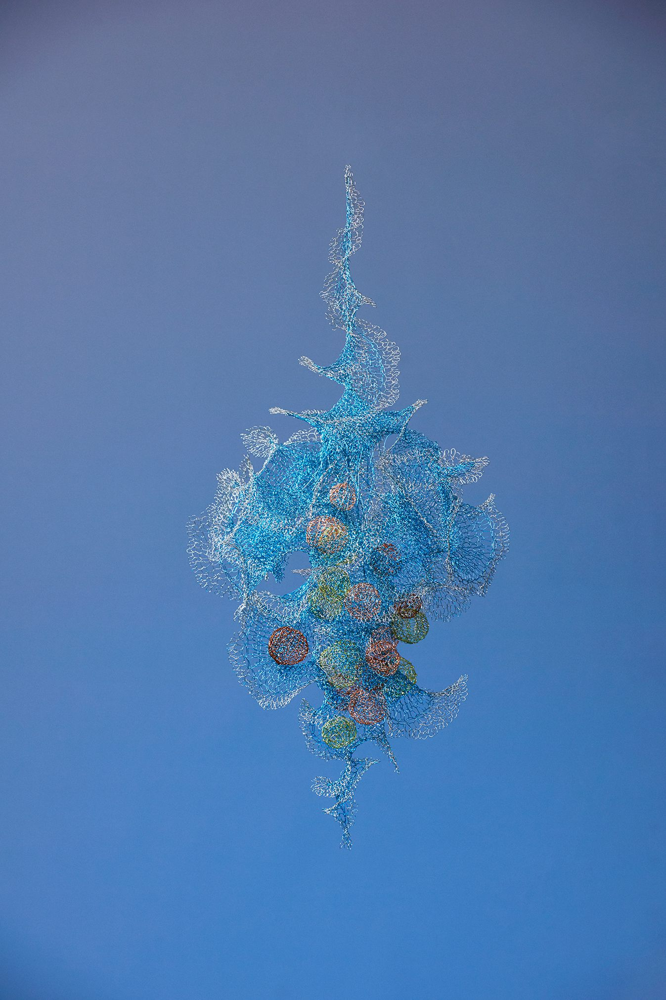
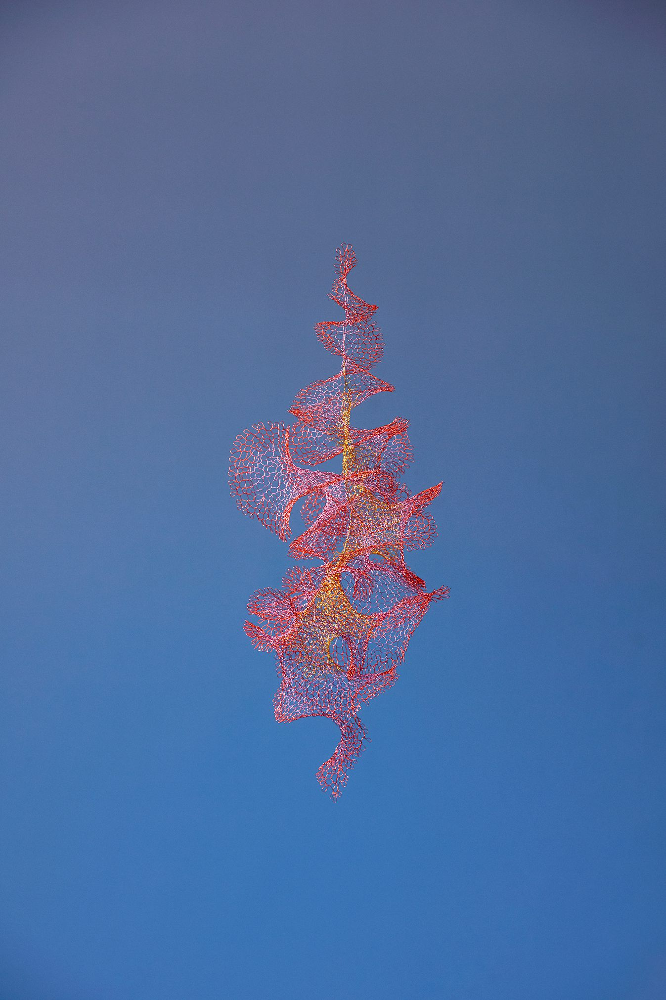
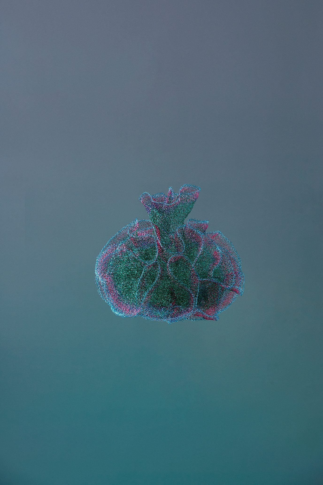
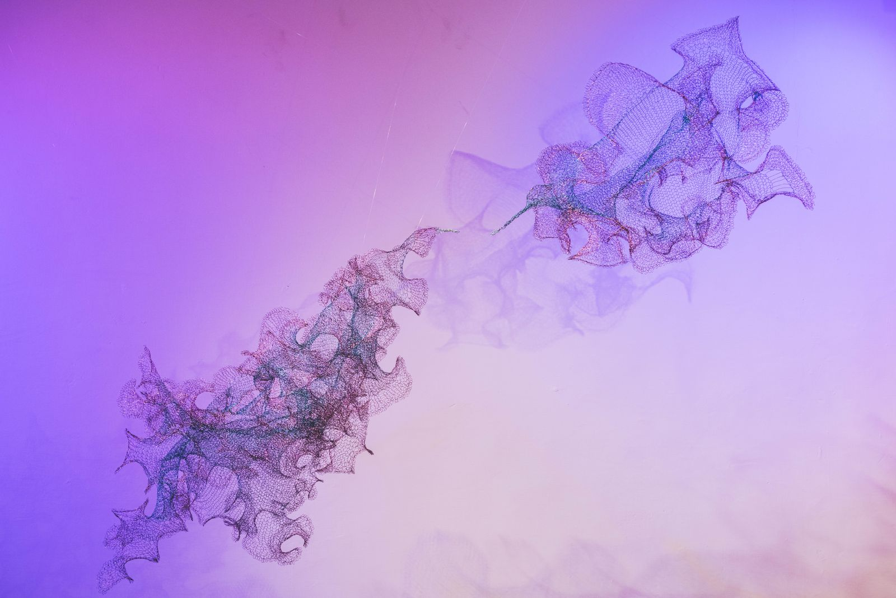
當中有一幅大型裝置作品吸引我的目光，我饒富興味地盯著它瞧了許久，Julia 走過來笑著問我是不是似曾相識？在她的詳細介紹後才了解原來靈感來自於『 創世紀 』 這幅名畫。左邊是天神宙斯，右邊是亞當，當他們接觸的那一刻，塵土受造的亞當好奇敬畏的觸碰著創造他的天神，他的父親，心中是什麼感受？在觀者心中又產生了什麼化學變化呢？
而談到自由意志，就像是我們每天的選擇，日常生活中下意識習以為常的行為，在這些行為模式的背後是思考後的行動還是潛意識的演化？人類有別於其他生物，最珍貴的是能擁有思考能力，而經由思考後做出的選擇更是層層疊疊構成不同文化，形成歷史。因為擁有自由意志，我們可以決定自己的方向; 擁有思考的能力，才可根據本身的意識來創造價值。
生物形狀的雕塑作品結合哲學思維，似回圈般的冥想，更像是種自我療癒的儀式。讓觀者在欣賞作品之餘更能透過作品反思自身與內心深處進行對話。Julia Hung 透過奇幻夢境般的作品囈語，邀請你一起踏入她的抽象世界中，駐足觀賞作品中的低語呢喃，讓觀眾從不同角度中，一窺生命的本質以及本著原始好奇心思索未知的空間維度。
藝術家介紹
Julia Hung 洪郁雯，生於 1986 年台北。多元文化成長背景下，對於身旁一切事物維持開放的態度以及充滿好奇心，時常透過藝術創作反思，以不尋常的觀點對社會議題提出疑問。2012 年取得加拿大多倫多安大略藝術設計大學插畫學識之後， 2016 年到瑞士日內瓦高等藝術設計學院攻讀美術碩士，取得當代藝術家實作碩士學位。她時常探索並實驗各種媒材的可能性，運用豐富色彩和哲學思維，探討人造現實、消費文化和事物一體兩面的觀點，並從藝術中尋找身為人類的使命及意義。